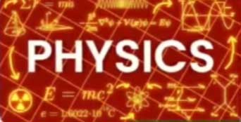
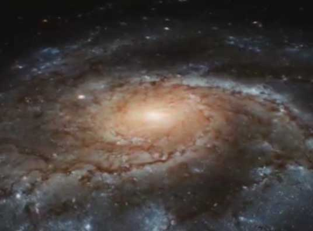
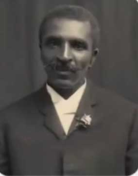
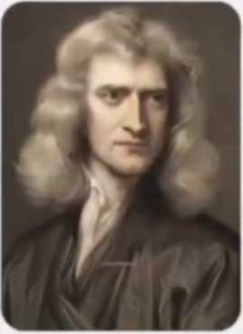
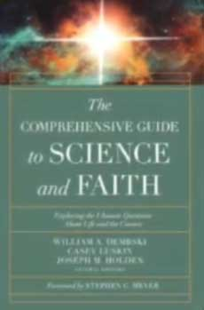

اگر پدری فرزند بیمارش رو به بیمارستان میبره و همزمان دعا هم میکنه این نه نشونه بی اعتقادی اون به خداست و نه دلیلی بر خرافی بودن دین بلکه نشونه درک درست از واقعیته و دعا درخواست از خدا برای بهترین نتیجه در چارچوب حکمت الهیه
دین هیچ وقت نگفته که انسان باید در برابر رنج مصیبت دست از تلاش برداره و فقط دعا بکنه
توکل رها کردن تدبیر نیست بلکه کار کردن با عقل و واگذاری نتیجه به حکمت خدا
در بیماری هم ، فردی که به خدا اعتقاد داره هم پیش پزشک میره و دارو مصرف میکنه و همزمان دعا هم میکنه
چون میدونه علم اون پزشک بخشی از نظام الهیه
قوانین طبیعت از فیزیک تا زیست شناسی

ابزار های آفریده شده توسط خدایی هستن که جهان رو با نظم دقیق بنا کرده

همون خدایی که تپش قلب به اراده اونه دانش تشخیص رو در مغز پزشک قرار داده علم رقیب خدا نیست ادامه دهنده اراده اوست
تاریخ علم پر از دانشمندانیه که ایمان را با تحقیقاتشون پیوند زدن
مثلا فرانسیس کالینز مدیر پروژه ژنوم انسانی که دی ان ای بشر رو رمزگشایی کرد کتابی نوشته به نام زبان خدا
و میگه ایمان و علم دو بال پرواز انسانن
یا جرج واشینگتن کارور گیاه شناس آمریکایی

که صدها اختراع کشاورزی داره میگه خدا را در آزمایشگاه می بینم
یا نیوتن پدر فیزیک مدرن که قوانین حرکت رو کشف کرد میگه

این زیبای جهان بدون خالق حکیم ممکن نیست
حتی یوهانس کپلر که قوانین حرکت سیارات رو فرمول بندی کرد
ستاره شناسی را فکر کردن افکار خدا می نامد
یا ویلیام دمبسکی ستاره شناس و فیلسوف برجسته آمریکایی در کتاب علم و ایمان میگه

علم و ایمان نه مخالف هم بلکه مکمل هم هستن و نظم جهان گواهی طراحی هوشمند الهی است
اینها خرافه پرداز نبودن بلکه پیشگامان علم بودن که خدا را در نظم جهان می دیدن نه خارج از اون
انکار هدا به خاطر علم مثل اینکه بگیم چون ساعت دقیق کار میکنه پس ساعت ساز لازم نیست و خودش ساخته شده
ساعت بدون ساعت ساز نمیتونه خودش رو بسازه فقط میتونه کار بکنه